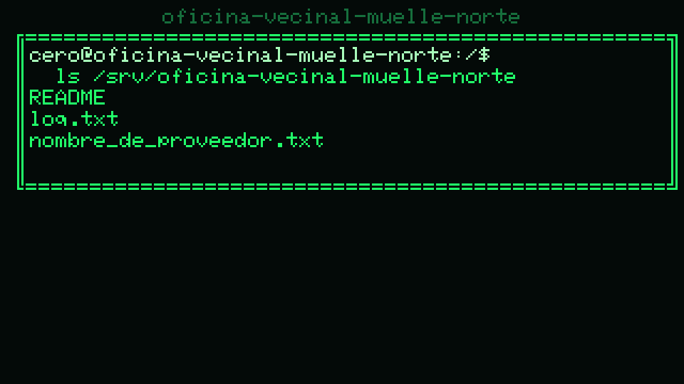

CyberRoot — REPL del core real en el navegador
cap. 0 · seed 42 · core Python real
(src/core/, stdlib puro y headless) vía
Pyodide. Repro-demo src/render/golden/cap0-room.png
al pie (sha c84450443e835609).
URL jugable: ?seed=42&chapter=0 o ?seed=42&chapter=3
(cap. 3: lee la orden con cat → sudo → ps aux / kill).
Sin query = cap. 0 seed 42 (no-regresión).
Iniciando…
…$
Enter ejecuta. Cap. 0: ls, cd, cat, cp. Cap. 3 añade ps, env, sudo, kill, grep, wc.
Evidencia jugable — render v0 (seed 42, PNG golden)
cap0-room.png 320×180 — sha c84450443e835609
(repro-demo PYTHONPATH=src .venv/bin/python -m render.demo --seed 42)

cap0-room.zoom3x.png (zoom 3×)